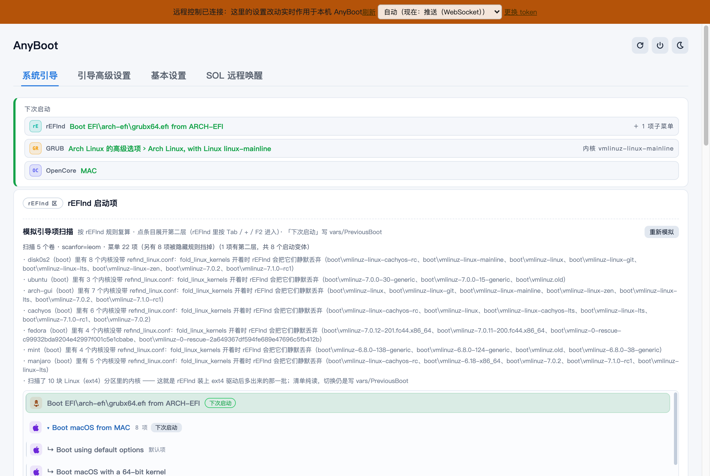
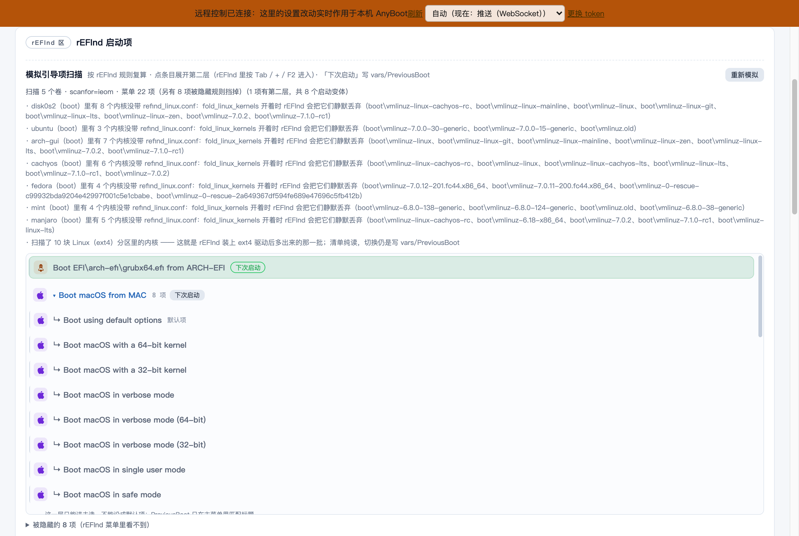
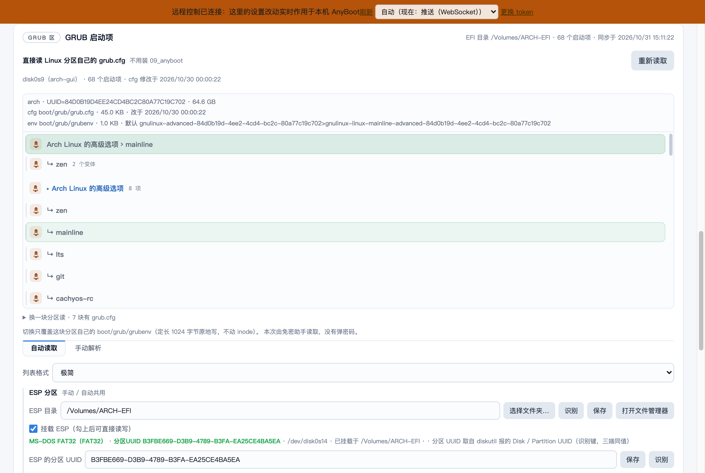
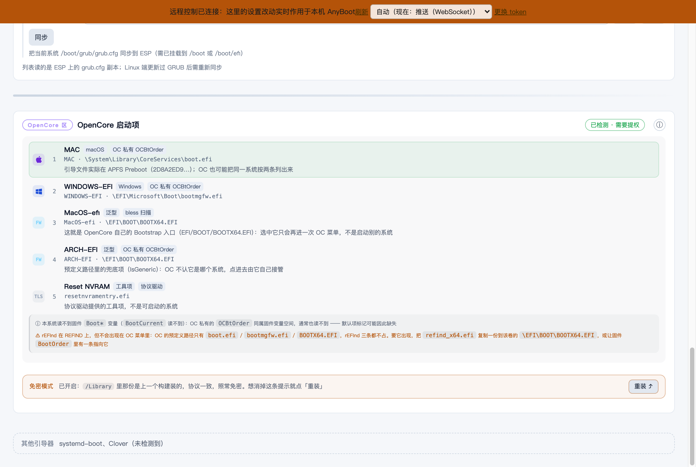

跨平台引导管理 + 远程电源工具：rEFInd / GRUB / OpenCore / systemd-boot / Clover 一站管理，
托盘点一下切换下次启动项，手机 / 浏览器远程操作。
本站为在线演示：界面与真实应用完全一致，
数据来自一台真实多系统机器的快照回放，所有操作只在演示里生效，不会触达任何机器。
下次启动切换、rEFInd 模拟扫描、GRUB 直读 Linux 内核、OpenCore 菜单预演、免密提权状态。
🎛️ 引导高级设置五个引导器开/关与左右编排、版式主题、菜单样式、上下排序，下方实时预演真实数据。
⚙️ 基本设置主题与强调色、开机自启、远程控制（端口 / token）、通道通知、窗口行为等全部设置项。
🌙 SOL 远程唤醒Wake-on-LAN 魔术包规则（本机真实 sol 配置快照）、HTTP 服务监听、配置编辑器、一键安装。
电脑列表（在线状态 / 电源动作 / 引导切换）、SSH 服务器档案、远程接入、传输、终端设置、关于。
⌨️ SSH 终端xterm.js 真实终端体验 —— 连接一台「演示服务器」，可以输入命令（内置 ls / cd / cat / uname 等）。
📁 SFTP 文件浏览远程目录浏览（大小 / 权限 / 修改时间），演示里开放浏览，上传下载等修改操作已禁用。
🔑 SSH 密钥管理密钥列表（Ed25519 / RSA）、指纹、口令状态、被哪些服务器引用；演示里可点「生成密钥」。
💾 备份与恢复电脑列表 / SSH 档案 / 密钥 / 设置导出导入、WebDAV 云同步的完整界面。



